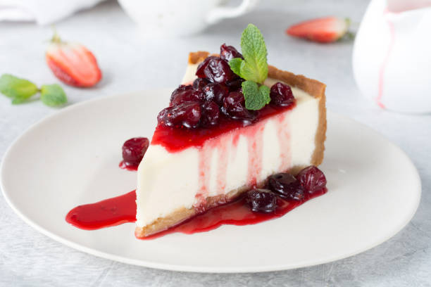

Cheesecake de Frutas

Essa receita de cheesecake de frutas vermelhas é simplesmente deliciosa!
A combinação do doce do morango com o sabor levemente ácido do mirtilo cria uma sobremesa fresca e equilibrada.
Além disso, a textura cremosa do cheesecake contrasta perfeitamente com a crocância da base de biscoitos.
Se você está procurando uma sobremesa fácil de fazer e que impressione seus convidados, essa é a receita ideal.
Modo de preparo
👩🏻🍳 Ingredientes:- 🍪 200g de biscoitos maizena
- 🧈 100g de manteiga
- 🍶 300g de cream cheese
- 🥛 1 lata de leite condensado
- 🍋 1/2 xicara de suco de limão
- 🥄 1 colher de sopa de gelatina em pó incolor
- 🍓 1 xícara de morangos picados
- 🫐 1 xícara de mirtilos
1. Triture os biscoitos e misture com a manteiga derretida. Forre uma forma e leve à geladeira.
2. Bata o cream cheese, leite condensado e suco de limão. Adicione a gelatine dissolvida.
3. Despeje sobre a base de biscoitos e leve à geladeira por 2 horas.
4. Cubra com as frutas e sirva gelado.